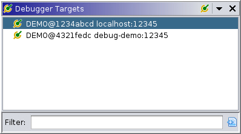
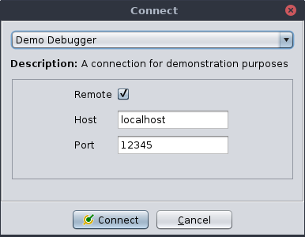

|  |
The targets window manages connections to live debuggers. In most cases, each item is a GADP/TCP connection to a local "agent" process which manages a native debugger, communicating information about its targets. It is possible, however, to create a connection without starting an agent, e.g., to re-connect to an existing agent, or a remote agent. Additionally, different connectors may implement alternative protocols, or use a debugging API directly. This window allows the user to establish and terminate connections.
This window provides the following actions for managing connections.
Prompts the user to select a connector and configure its parameters.
|  |
The top drop-down displays a list of pluggable connectors. A description and the options for the currently-selected connector are displayed below. Some will start a new session, while others may simply connect to an existing session. Each connector defines its own options, but common ones include port numbers, host names, the system paths of debugging components, etc. Each connector should provide help in the form of tool tips, accessed by hovering over an option's name. Clicking "Connect" will start the connector and dismiss the dialog.
This action is available when a connection is selected. It closes the connection. Note, depending on the robustness of the connector's termination logic, this may not clean up all processes created by the connector.
This action is always available. It closes all debugger connections, no matter what tool created them. This is a sort of panic and reset action. As with Disconnect, clean-up depends on each connector's implementation.
This maintenance command instructs the selected connector to flush its local caches. It should rarely, if ever, be needed by the user. It may be useful if, e.g., stale memory is not getting updated.